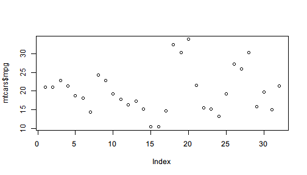
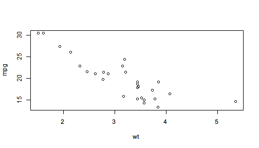

In a pipeline, one may be interested not only in the final outcome but sometimes also in intermediate results. In other words, as the operator pipes the value forward for streamlined processing, one may also want to save the intermediate result for further use, visualize the intermediate values for better understanding, or print some message to indicate the progress.
However, if we directly call plot() or cat() in the middle of a pipeline, the pipeline will be broken because they return NULL or some other values undesired for further piping.
For example, we draw a scatter plot and saves its returned value to z.
z <- plot(mtcars$mpg)

z
# NULL
It can be clearly seen that plot() does two things:
mtcars$mpg.NULL value.The first thing is often considered as side-effect because it is an influence the function has on the outside environment: it changes what to show in the graphics area. However, when we are building a pipeline and want to plot with some intermediate results, we only want the side effect and have to avoid the returned value, in this case, NULL, which is not the desired data we would like to further process.
%>>% provides a syntax to supports side effect piping. The syntax is called one-sided formula that starts with ~ to indicate that the right-hand side expression will be evaluated only for its side-effect, its value will be ignored, and the input value will be returned instead.
For example, after subsetting mtcars by lower and upper quantile, if we want to see how many rows are left, we can use a one-sided formula to indicate side-effect.
mtcars %>>%
subset(mpg >= quantile(mpg, 0.05) & mpg <= quantile(mpg, 0.95),
c(mpg, cyl, wt)) %>>%
(~ cat("rows:",nrow(.),"\n")) %>>% # cat() returns NULL
summary
# rows: 28
# mpg cyl wt
# Min. :13.30 Min. :4.000 Min. :1.513
# 1st Qu.:15.72 1st Qu.:4.000 1st Qu.:2.732
# Median :19.20 Median :6.000 Median :3.325
# Mean :19.85 Mean :6.214 Mean :3.152
# 3rd Qu.:21.82 3rd Qu.:8.000 3rd Qu.:3.570
# Max. :30.40 Max. :8.000 Max. :5.345
To explain in detail, the syntax (~ f(.)) tells the operator that f(.) on the right of ~ should only be evaluated for its side effect with . representing the input value, and the input value, i.e. the filtered mtcars should continue in the pipeline and be passed to summary().
If cat() is directly called here, the code will not only fail because %>>% tries to pass the filtered data (a data.frame, which is essentially a list) to cat() and get rejected, but also become less readable because the data processing steps and side-effect steps are mixed to make it harder to distinguish really important lines.
mtcars %>>%
subset(mpg >= quantile(mpg, 0.05) & mpg <= quantile(mpg, 0.95),
c(mpg, cyl, wt)) %>>%
cat("rows:",nrow(.),"\n") %>>% # cat() returns NULL
summary
# Error in cat(list(...), file, sep, fill, labels, append): argument 1 (type 'list') cannot be handled by 'cat'
If you look back at the correct code with the side effect syntax, you may find it more readable because you can easily distinguish side effect expressions with other lines.
The design of ~ expression syntax for side effect also makes one-sided formula a branch of the mainstream pipeline. Note that the design always emphasizes the mainstream pipeline and makes it easy to find out branch pipelines.
Another example is plotting in the middle of a pipeline as side effect.
mtcars %>>%
subset(mpg >= quantile(mpg, 0.05) & mpg <= quantile(mpg, 0.95)) %>>%
(~ plot(mpg ~ wt, data = .)) %>>% # plot() returns NULL
lm(formula = mpg ~ wt) %>>%
summary()

#
# Call:
# lm(formula = mpg ~ wt, data = .)
#
# Residuals:
# Min 1Q Median 3Q Max
# -3.9594 -1.7930 -0.2217 1.5782 5.6073
#
# Coefficients:
# Estimate Std. Error t value Pr(>|t|)
# (Intercept) 35.3059 1.9850 17.786 4.49e-16 ***
# wt -4.9043 0.6108 -8.029 1.65e-08 ***
# ---
# Signif. codes: 0 '***' 0.001 '**' 0.01 '*' 0.05 '.' 0.1 ' ' 1
#
# Residual standard error: 2.563 on 26 degrees of freedom
# Multiple R-squared: 0.7126, Adjusted R-squared: 0.7016
# F-statistic: 64.47 on 1 and 26 DF, p-value: 1.652e-08
With ~, side-effect operations can be easily distinguished from mainstream pipeline, and the input value of each line can be easily found by skipping the lines that start with (~ while you are looking back.
If you feel ambiguous when using . in the side-effect expression, you can write a formula after ~. The expression can be either an expression using . or a formula (lambda expression) using user-defined symbol. Therefore the first example can be rewritten like
mtcars %>>%
subset(mpg >= quantile(mpg, 0.05) & mpg <= quantile(mpg, 0.95),
c(mpg, cyl, wt)) %>>%
(~ filtered ~ cat("rows:",nrow(filtered),"\n")) %>>% # cat() returns NULL
summary
# rows: 28
# mpg cyl wt
# Min. :13.30 Min. :4.000 Min. :1.513
# 1st Qu.:15.72 1st Qu.:4.000 1st Qu.:2.732
# Median :19.20 Median :6.000 Median :3.325
# Mean :19.85 Mean :6.214 Mean :3.152
# 3rd Qu.:21.82 3rd Qu.:8.000 3rd Qu.:3.570
# Max. :30.40 Max. :8.000 Max. :5.345
The latest development version supports a feature to easily print a string in the middle of a pipeline. This feature can be used to indicate the step in which R is working on. For example,
mtcars %>>%
"Running linear model" %>>%
lm(formula = mpg ~ wt + cyl) %>>%
"Summarizing the model" %>>%
summary %>>%
coef
# Running linear model
# Summarizing the model
# Estimate Std. Error t value Pr(>|t|)
# (Intercept) 39.686261 1.7149840 23.140893 3.043182e-20
# wt -3.190972 0.7569065 -4.215808 2.220200e-04
# cyl -1.507795 0.4146883 -3.635972 1.064282e-03
For computationally heavy steps, we can insert strings like above to indicate the working progress of the pipeline. The computation in the above example apparently does not deserve such indication, the usage for a larger dataset can be helpful.
data(diamonds, package = "ggplot2")
library(pipeR)
library(dplyr)
diamonds %>>%
"filtering data ..." %>>%
filter(carat >= quantile(carat, 0.05) & carat <= quantile(carat, 0.95)) %>>%
"selecting variables ..." %>>%
select(carat, price, depth) %>>%
"estimating linear model ..." %>>%
lm(formula = carat ~ price + depth) %>>%
"summarizing model ..." %>>%
summary
An easier way to print the intermediate value is to use (? expr) syntax like asking a question. This also supports formula as lambda expression.
mtcars %>>%
subset(vs == 1, c(mpg, cyl, wt)) %>>%
(? nrow(.)) %>>%
(? data ~ ncol(data)) %>>%
summary
# ? nrow(.)
# [1] 14
# ? data ~ ncol(data)
# [1] 3
# mpg cyl wt
# Min. :17.80 Min. :4.000 Min. :1.513
# 1st Qu.:21.40 1st Qu.:4.000 1st Qu.:2.001
# Median :22.80 Median :4.000 Median :2.623
# Mean :24.56 Mean :4.571 Mean :2.611
# 3rd Qu.:29.62 3rd Qu.:5.500 3rd Qu.:3.209
# Max. :33.90 Max. :6.000 Max. :3.460
However, in some cases, the output can be confusing if the same expression is evaluated at multiple places. For example,
mtcars %>>%
(? nrow(.)) %>>%
subset(vs == 1, c(mpg, cyl, wt)) %>>%
(? nrow(.)) %>>%
lm(formula = mpg ~ cyl + wt)
# ? nrow(.)
# [1] 32
# ? nrow(.)
# [1] 14
#
# Call:
# lm(formula = mpg ~ cyl + wt, data = .)
#
# Coefficients:
# (Intercept) cyl wt
# 42.6573 -0.6388 -5.8132
nrow(.) is evaluated both before and after subsetting mtcars. The short example may not be the worst situation, but the ambiguity can be eliminated by adding a string before ?.
mtcars %>>%
("Raw data rows:" ? nrow(.)) %>>%
subset(vs == 1, c(mpg, cyl, wt)) %>>%
("Filtered data rows:" ? nrow(.)) %>>%
lm(formula = mpg ~ cyl + wt)
# ? Raw data rows:
# [1] 32
# ? Filtered data rows:
# [1] 14
#
# Call:
# lm(formula = mpg ~ cyl + wt, data = .)
#
# Coefficients:
# (Intercept) cyl wt
# 42.6573 -0.6388 -5.8132
In the modified version above, we label each question expression by a string so that the output only prints the label instead, which makes it clearer to see what is printed below the question.
Side effects are usually used on purpose not to influence the mainstream pipeline or workflow. But in some cases, such influence can be useful.
An example is stopping. If we call stopifnot(...) as side effect in the middle of a pipeline, we are actually trying to ensure a series of conditions. If any of the conditions does not hold, the evaluation will stop.
The following code build a linear model on mtcars and before making predictions, we insert a condition to check: if R2>=0.5 is violated, the pipeline will be terminated immediately.
In this particular case, the required R2 is too low to be violated for this linear model.
mtcars %>>%
subset(vs == 1, c(mpg, cyl, wt)) %>>%
lm(formula = mpg ~ cyl + wt) %>>%
(~ stopifnot(summary(.)$r.squared >= 0.5)) %>>%
predict(newdata = list(cyl = 4.5, wt = 3.0))
# 1
# 22.34311
If we adjust the threshold to 0.8, the pipeline will be stopped before making predictions.
mtcars %>>%
subset(vs == 1, c(mpg, cyl, wt)) %>>%
lm(formula = mpg ~ cyl + wt) %>>%
(~ stopifnot(summary(.)$r.squared >= 0.8)) %>>%
predict(newdata = list(cyl = 4.5, wt = 3.0))
# Error: summary(.)$r.squared >= 0.8 is not TRUE
Another way to use side effect is debugging, which is more flexible than violently stopping the pipeline and gives you a chance to see what happens. If you want to go into debugging mode in the middle of a pipeline to inspect the environment interactively, you only have to insert browser() as a side-effect expression after the line you want to break.
For example,
mtcars %>>%
subset(vs == 1, c(mpg, cyl, wt)) %>>%
(~ browser()) %>>%
lm(formula = mpg ~ cyl + wt) %>>%
summary
The code will pause at browser() and go into interactive debugging mode.
Called from: eval(expr, envir, enclos)
Browse[1]> head(.)
mpg cyl wt
Datsun 710 22.8 4 2.320
Hornet 4 Drive 21.4 6 3.215
Valiant 18.1 6 3.460
Merc 240D 24.4 4 3.190
Merc 230 22.8 4 3.150
Merc 280 19.2 6 3.440
Browse[1]>
In the mode, . represents the object being piped, and you can evaluate any expression you are interested in. To continue piping, just hit <Enter>.
If you want to distinguish different breakpoints, you can add cat() or message() ahead to show some message before getting paused.
mtcars %>>%
subset(vs == 1, c(mpg, cyl, wt)) %>>%
(~ message("debug1")) %>>%
(~ browser()) %>>%
lm(formula = mpg ~ cyl + wt) %>>%
summary
The code will pause after showing the message debug1 as following:
debug1
Called from: eval(expr, envir, enclos)
Browse[1]>
In this way, you can easily find out which breakpoint is hit.
Since browser() supports conditional breakpoint with expr = being set, the breakpoint can be smart to examine the value of the expression and then decide whether or not to pause. For example,
mtcars %>>%
subset(vs == 1, c(mpg, cyl, wt)) %>>%
lm(formula = mpg ~ cyl + wt) %>>%
summary %>>%
(~ browser(expr = .$r.squared < 0.8))
If the R2 of the linear model is less than 0.8, the evaluation will pause and wait for browser. You can adjust the threshold at anytime to any value you think indicating a problem.